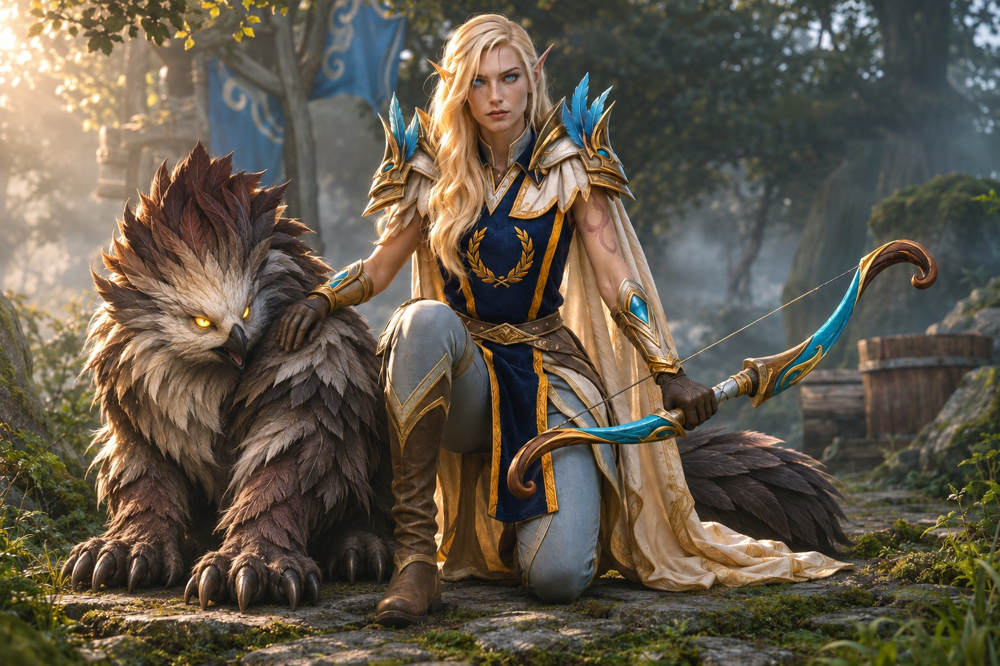

The Lands of My Ancestors
I awoke at the Lion's Pride Inn with thoughts of Shen'dralas, a distant land I had heard mentioned in Goldshire.
Sylthara and I journeyed across the world, riding my Galestrider from Nijel's Point into Feralas. Here lie remnants of Eldre'Thalas, the ancient city from which my own High Order traces its heritage.
Unfortunately, the Magram centaurs were considerably less welcoming than I had hoped. Twice I fell to their dark magic before earning neutral standing with the Shen'dralar.
During my subsequent travels through Stormwind, I purchased a little Siamese cat for forty silver. Sylthara now has some rather smaller company.
Further errands took me through the Badlands, where I gathered supplies and continued preparations for an eventual expedition into Uldaman.
Water and Blood in the Desert
Tanaris is a remarkable land. Endless dunes stretch beneath an open sky, and the desert winds carry sand rather than the familiar moisture of Riverglades.
Here, water is perhaps more valuable than gold.
The Wastewander bandits have seized the water towers constructed by the goblins of Gadgetzan. These towers draw water from deep beneath the desert, sustaining the settlements and their enterprises.
I initially joined Izriel Lightborn and Lizzy Regina against the bandits. Later, despite falling to a Wastewander Shadow Mage, I returned with Damer Flinne and Ellarosa Moonsong.
Together we defeated Caliph Scorpidsting, the leader of the Wastewander bandits, and completed our duties against his followers.
Upon returning to Gadgetzan, I reached my forty-fifth season.
Sylthara and I continue to grow stronger, although I still occasionally attract the attention of one enemy too many.
The Pirates of Lost Rigger Cove
Mountains shelter Lost Rigger Cove on three sides, concealing a haven for the Southsea Pirates. Their shipyard, buildings and surrounding waters provide shelter for a considerable number of cutthroats.
My first expedition against them brought me into the company of Mylianne Telbrenique, who greeted me with an unusual warning.
“Welcome to hat hell.”
At the time, I did not entirely appreciate the meaning of those words.
After defeating Andre Firebeard and recovering stolen merchandise, I returned to hunt the pirates in earnest. Sylthara and I fought pirates, freebooters, dock workers and swashbucklers.
Their defeat earned me the friendship of Gadgetzan's goblins.
Later, I joined Partypower Hc and Torbjorn Grymbeard to collect twenty pirate hats. Much to our amusement, Torbjorn and I had been fighting together for some time before recognizing one another as members of the same guild.
“Heya Aelindra, didn't even realize who was in this group,” he remarked.
Neither had I.
We continued our hunt until I had collected the final hat. I thanked my companions and offered Torbjorn further assistance, but he was content to continue hunting.
I suspect the pirates will remember this day considerably less fondly than I shall.
A Night Among the Goblins
Gadgetzan is unlike the settlements of the Alliance. Here, one's banner matters considerably less than one's purse. Goblin guards maintain order, allowing members of both the Horde and Alliance to conduct their business.
There is something rather practical about that arrangement.
Having earned the friendship of both Powderfuse and Gadgetzan, I decided to spend the night at the local inn.
Sylthara and I have traveled far from the clouds of Zephras Isle. Tonight, we rest among the sands of Tanaris.
Tomorrow brings another adventure.
— Aelindra Sarjeant